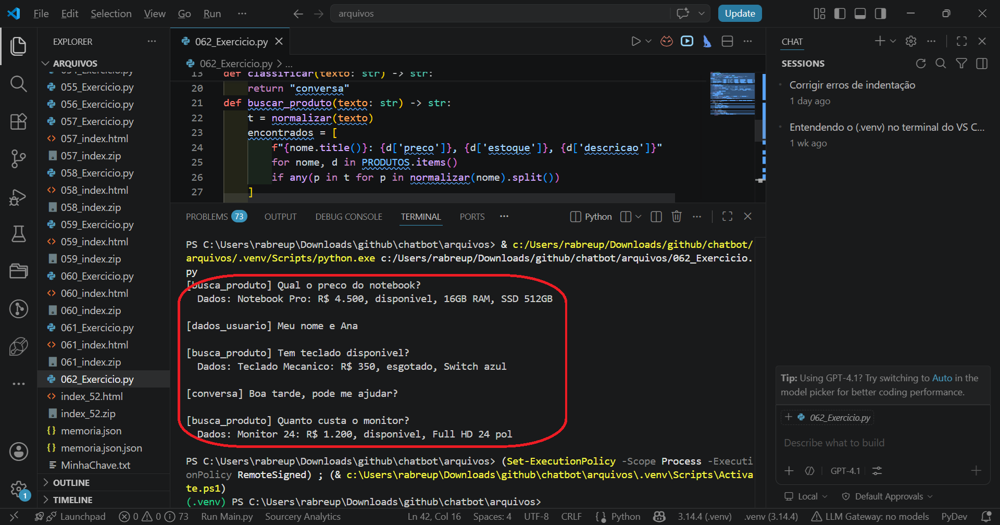
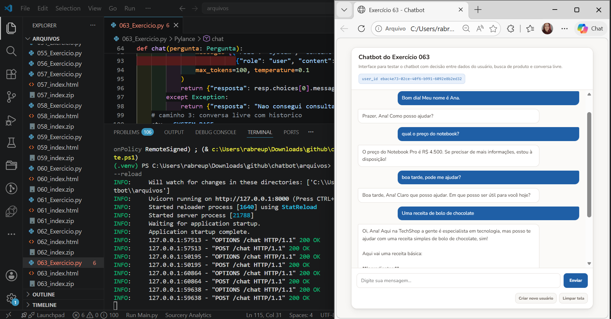
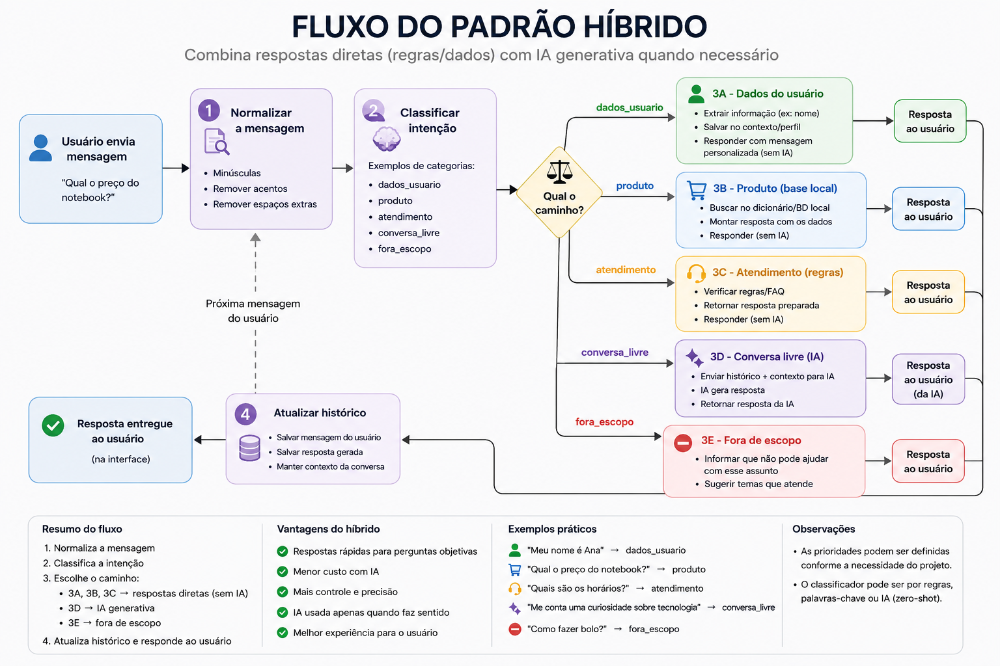
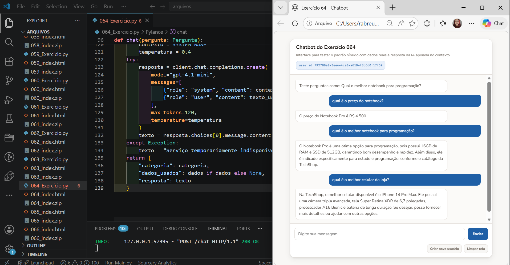

Quando toda mensagem do usuário vai direto para a IA, o chatbot até responde, mas responde com um custo: gasta mais tokens, fica menos previsível e pode inventar informações que deveriam vir de uma fonte confiável. Agora nós mudaremos a arquitetura, colocando uma camada de decisão entre o usuário e a IA.
Pensa num atendimento de telecom. O cliente pergunta o saldo da fatura. A resposta certa não está na IA, está no sistema da empresa. Se essa pergunta for direto para a IA, ela pode inventar um número bonito e errado. Se o código busca o saldo primeiro e depois pede para a IA apenas organizar a resposta, o atendimento fica mais preciso, mais controlado e mais barato.
Essa é a virada de mentalidade desta aula. O fluxo deixa de ser usuário → IA → resposta e passa a ser usuário → sistema → decisão → ação → resposta. A IA continua existindo, mas agora ela é um componente dentro do sistema, não o cérebro único que resolve tudo.
O primeiro tipo cobre detecções simples, como identificar nome, gostos e preferências informadas pelo usuário. O terceiro tipo é o que a IA costuma fazer bem, com bom custo e boa velocidade. O segundo é o mais importante e, ao mesmo tempo, o mais subestimado, porque é nele que a IA mais erra quando não tem dados reais para se apoiar.
A IA não tem acesso a nenhum dado externo por padrão. Ela só sabe o que está no prompt e o que aprendeu no treinamento. Se você perguntar o preço de um produto da sua empresa, ela vai tentar responder com base no que viu durante o treinamento (do modelo IA) e provavelmente vai inventar um número que parece razoável. Esse comportamento tem um nome: alucinação. Não é um bug, é uma característica do modelo. A forma de contornar é simples: você busca os dados primeiro e os coloca no prompt. A IA lê, interpreta e formata. Esse padrão se chama RAG, de Retrieval Augmented Generation, ou geração aumentada por recuperação. Você recupera dados reais e os injeta no contexto antes de gerar a resposta.
A implementação mais simples de RAG não precisa de ferramentas sofisticadas. Um dicionário Python já funciona como base de dados para começar. A lógica é sempre a mesma: identificar o que o usuário quer, buscar as informações relevantes e montar um contexto enriquecido antes de chamar o modelo.
Antes de buscar qualquer dado, o sistema precisa entender o que o usuário quer. Isso se chama classificação de intenção. Uma função que recebe a mensagem e devolve uma categoria, como "dados_usuario", "busca_produto" ou "conversa". Com essa categoria definida, o sistema sabe exatamente qual caminho tomar, sem precisar acionar a IA para descobrir isso.
Classificar com palavras-chave é a forma mais eficiente: simples, rápida, sem custo de tokens e completamente previsível. Se você perguntar para a IA "essa pergunta é sobre produto ou sobre o usuário?", ela vai responder, mas às vezes vai errar e o sistema vai para o caminho errado. Com palavras-chave, o comportamento é determinístico, sempre o mesmo resultado para a mesma entrada.
classificar(texto) identifica a intenção"dados_usuario" → responde direto com o perfil salvo"busca_produto" → buscar_produto(texto) retorna dados reais → IA formata"conversa" → IA responde com o histórico e o system promptA gente começa pela parte mais simples: um classificador rodando no terminal. Ele ainda não conversa com a IA. Ele só mostra uma coisa importante, antes de responder, o sistema precisa decidir qual caminho aquela mensagem deve seguir.
import unicodedata def normalizar(texto: str) -> str: texto = texto.lower() texto = unicodedata.normalize("NFD", texto) return "".join(c for c in texto if unicodedata.category(c) != "Mn") # base de dados local - em producao viria de planilha ou banco PRODUTOS = { "notebook pro": {"preco": "R$ 4.500", "estoque": "disponivel", "descricao": "16GB RAM, SSD 512GB"}, "mouse sem fio": {"preco": "R$ 120", "estoque": "disponivel", "descricao": "Ergonomico 2.4GHz"}, "teclado mecanico":{"preco": "R$ 350", "estoque": "esgotado", "descricao": "Switch azul"}, "monitor 24": {"preco": "R$ 1.200", "estoque": "disponivel", "descricao": "Full HD 24 pol"}, } def classificar(texto: str) -> str: t = normalizar(texto) if any(g in t for g in ["meu nome", "eu me chamo", "quem eu sou"]): return "dados_usuario" if any(g in t for g in ["preco", "valor", "custa", "estoque", "disponivel", "notebook", "mouse", "teclado", "monitor"]): return "busca_produto" return "conversa" def buscar_produto(texto: str) -> str: t = normalizar(texto) encontrados = [ f"{nome.title()}: {d['preco']}, {d['estoque']}, {d['descricao']}" for nome, d in PRODUTOS.items() if any(p in t for p in normalizar(nome).split()) ] return "\n".join(encontrados) if encontrados else "Nenhum produto encontrado." if __name__ == "__main__": testes = [ "Qual o preco do notebook?", "Meu nome e Ana", "Tem teclado disponivel?", "Boa tarde, pode me ajudar?", "Quanto custa o monitor?", ] for msg in testes: cat = classificar(msg) print(f"[{cat}] {msg}") if cat == "busca_produto": print(" Dados:", buscar_produto(msg)) print()
| PRODUTOS | Base de dados local. Em produção, esses dados viriam de uma planilha, banco de dados ou API. Para o exercício, um dicionário Python tem exatamente a mesma lógica de busca. |
| def classificar(texto) | Decide o caminho antes de qualquer ação. Verifica listas de palavras-chave em ordem de prioridade e retorna uma string que identifica a categoria. Nunca chama a IA. |
| any(g in t for g in [...]) | Verifica se qualquer palavra da lista aparece no texto. O any() retorna verdadeiro se pelo menos uma condição for satisfeita. Mais enxuto que uma sequência de if/elif. |
| def buscar_produto(texto) | Busca na base e retorna contexto formatado. Verifica cada produto para ver se alguma palavra do nome aparece na mensagem. Retorna uma string pronta para ser injetada no prompt. |
Depois de montar o arquivo 062_Exercicio.py, a gente testa pelo terminal. Esse arquivo não sobe servidor e não abre tela de chatbot. Ele serve para enxergar a decisão do código antes de qualquer chamada para IA.
No terminal, nós rodamos python 062_Exercicio.py. Cada mensagem da lista testes passa pela função classificar(). Quando aparece [busca_produto], significa que o sistema reconheceu uma pergunta ligada ao catálogo. Quando aparece [dados_usuario], significa que ele encontrou algo sobre o próprio usuário. Quando aparece [conversa], significa que a mensagem não caiu nas regras mais específicas e poderia seguir para uma conversa mais livre.
Esse teste é importante porque deixa a decisão visível. Antes de colocar a IA no meio, nós conferimos se o código está escolhendo o caminho certo.

Com o classificador funcionando, o próximo passo é conectar tudo numa API FastAPI. A função chat() agora tem três caminhos possíveis: dados do usuário respondidos direto, dados de produto buscados e injetados no prompt, ou conversa livre com o histórico. Repara num detalhe importante: quando há dados de produto disponíveis, a instrução no prompt é clara, "responda usando apenas as informações abaixo". É isso que impede a IA de inventar. Se os dados dizem que o teclado está esgotado, a IA diz isso. Se não há informação sobre frete, a IA diz que não tem essa informação.
Vamos fazer mais um exercício para aprimorar isso.
import warnings, urllib3, unicodedata, httpx, os from fastapi import FastAPI from fastapi.middleware.cors import CORSMiddleware from pydantic import BaseModel from openai import OpenAI from dotenv import load_dotenv warnings.filterwarnings("ignore") urllib3.disable_warnings() load_dotenv() app = FastAPI() app.add_middleware(CORSMiddleware, allow_origins=["*"], allow_methods=["*"], allow_headers=["*"]) client = OpenAI(api_key=os.getenv("OPENAI_API_KEY"), http_client=httpx.Client(verify=False)) PRODUTOS = { "notebook pro": {"preco": "R$ 4.500", "estoque": "disponivel", "descricao": "16GB RAM, SSD 512GB"}, "mouse sem fio": {"preco": "R$ 120", "estoque": "disponivel", "descricao": "Ergonomico 2.4GHz"}, "teclado mecanico":{"preco": "R$ 350", "estoque": "esgotado", "descricao": "Switch azul"}, "monitor 24": {"preco": "R$ 1.200", "estoque": "disponivel", "descricao": "Full HD 24 pol"}, } SYSTEM_BASE = ( "Voce e o assistente da TechShop. " "Responda sempre em portugues, de forma clara e amigavel. " "Se nao tiver certeza de uma informacao, diga que nao sabe, nunca invente." ) usuarios: dict = {} def normalizar(texto: str) -> str: texto = texto.lower() texto = unicodedata.normalize("NFD", texto) return "".join(c for c in texto if unicodedata.category(c) != "Mn") def pegar_depois(texto_original: str, texto_normalizado: str, marcador: str) -> str: posicao = texto_normalizado.find(marcador) if posicao == -1: return "" inicio = posicao + len(marcador) return texto_original[inicio:].strip(".,!?:; ") def obter_usuario(uid: str) -> dict: if uid not in usuarios: usuarios[uid] = { "perfil": {"nome": None}, "mensagens": [{"role": "system", "content": SYSTEM_BASE}] } return usuarios[uid] def classificar(texto: str) -> str: t = normalizar(texto) if any(g in t for g in ["meu nome", "eu me chamo", "quem eu sou"]): return "dados_usuario" if any(g in t for g in ["preco", "valor", "custa", "estoque", "disponivel", "notebook", "mouse", "teclado", "monitor"]): return "busca_produto" return "conversa" def buscar_produto(texto: str) -> str: t = normalizar(texto) encontrados = [ f"{nome.title()}: {d['preco']}, {d['estoque']}, {d['descricao']}" for nome, d in PRODUTOS.items() if any(p in t for p in normalizar(nome).split()) ] return "\n".join(encontrados) if encontrados else "Produto nao encontrado no catalogo." class Pergunta(BaseModel): texto: str user_id: str | None = "default" @app.get("/") def raiz(): return {"mensagem": "TechShop API no ar!"} @app.post("/chat") def chat(pergunta: Pergunta): uid = (pergunta.user_id or "default").strip() usuario = obter_usuario(uid) perfil = usuario["perfil"] mensagens = usuario["mensagens"] texto_usuario = pergunta.texto.strip() if not texto_usuario: return {"resposta": ""} categoria = classificar(texto_usuario) # caminho 1: dados do usuario if categoria == "dados_usuario": t = normalizar(texto_usuario) if "meu nome e" in t: nome = pegar_depois(texto_usuario, t, "meu nome e").title() perfil["nome"] = nome return {"resposta": f"Prazer, {nome}! Como posso ajudar?"} if "quem eu sou" in t: return {"resposta": f"Voce e {perfil['nome']}." if perfil["nome"] else "Ainda nao sei seu nome."} # caminho 2: busca de produto com dados reais if categoria == "busca_produto": dados = buscar_produto(texto_usuario) prompt_produto = ( f"{SYSTEM_BASE} Responda usando APENAS as informacoes abaixo. " "Se a informacao nao estiver nos dados, diga que nao tem essa informacao.\n\n" f"Dados disponiveis:\n{dados}" ) try: resp = client.chat.completions.create( model="gpt-4.1-mini", messages=[{"role": "system", "content": prompt_produto}, {"role": "user", "content": texto_usuario}], max_tokens=100, temperature=0.1 ) return {"resposta": resp.choices[0].message.content} except Exception: return {"resposta": "Nao consegui consultar o catalogo agora."} # caminho 3: conversa livre com historico ctx = SYSTEM_BASE if perfil["nome"]: ctx += f" O cliente se chama {perfil['nome']}." mensagens[0]["content"] = ctx mensagens.append({"role": "user", "content": texto_usuario}) try: resp = client.chat.completions.create( model="gpt-4.1-mini", messages=mensagens, max_tokens=100, temperature=0.4 ) texto = resp.choices[0].message.content except Exception: texto = "Servico temporariamente indisponivel." mensagens.append({"role": "assistant", "content": texto}) if len(mensagens) > 10: mensagens = [mensagens[0]] + mensagens[-9:] usuario["mensagens"] = mensagens return {"resposta": texto}
| categoria = classificar(texto) | Primeiro passo obrigatório. Antes de qualquer outra lógica, a mensagem é classificada. O que vem depois depende completamente desse resultado. |
| prompt_produto | Contexto enriquecido com dados reais. Instrui explicitamente a IA a usar apenas as informações fornecidas. A temperatura 0.1 reforça o comportamento determinístico. |
| mensagens isoladas para produto | Histórico separado por caminho. A busca de produto não mistura com o histórico de conversa, evitando que contexto irrelevante confunda o modelo. |
| temperature=0.1 vs 0.4 | Temperatura diferente para cada caminho. Para produto, temperatura baixa garante fidelidade aos dados. Para conversa livre, temperatura maior deixa as respostas mais naturais. |
Agora classificador funcionando no terminal, e a entrada na API. O arquivo 063_Exercicio.py trabalha com FastAPI, então ele não deve ser rodado como um Python comum. A gente sobe o servidor com python -m uvicorn 063_Exercicio:app --reload e testa pelo 063_index.html.
O teste precisa passar pelos três caminhos. Primeiro, uma mensagem de nome, como meu nome é Ana, para conferir o caminho dos dados do usuário. Depois, uma pergunta sobre produto, como qual o preço do notebook?, para conferir se o sistema busca os dados no dicionário antes de chamar a IA. Por fim, uma pergunta de conversa livre, como boa tarde, pode me ajudar?, para ver o caminho em que a IA responde com o histórico normal.
O ponto principal aqui não é decorar o código inteiro. É perceber a ordem da execução: recebe a mensagem, identifica a intenção, escolhe o caminho e só chama a IA quando faz sentido.

Observe que ele seguiu como nós pedimos, primeiro olhou o sistema, depois foi para a IA, como na minha frase não tinhas as palavras definidas para ir para o sistema, ele me informou que é uma empresa de TI e passou a receita do bolo. E ainda respeitou a contagem de caracteres que definimos no max_token.
Levanta, respira, toma uma água ou um café, e logo voltamos.
Existe uma situação que aparece muito em sistemas reais: o usuário mistura dado com opinião. Ele não pergunta só qual é o preço do notebook?. Ele pergunta qual é o melhor notebook para programação?. Percebe a diferença? A pergunta tem um dado objetivo, porque existe um produto no catálogo, mas também tem uma parte de orientação, porque o usuário quer uma recomendação.
Nesse caso, o sistema não deve escolher entre código ou IA. Ele usa os dois. Primeiro o código procura dados reais no catálogo. Depois a IA entra para transformar esses dados em uma resposta mais natural. Se o produto foi encontrado, a IA fica presa ao que o catálogo informou. Se o produto não foi encontrado, ela pode responder de forma geral, mas sem inventar preço, estoque ou característica técnica.
É isso que chamamos aqui de padrão híbrido. O código decide e busca. A IA explica e organiza a resposta.

Vamos fazer essa idéia funcionar.
import warnings import urllib3 import unicodedata import httpx import os from fastapi import FastAPI from fastapi.middleware.cors import CORSMiddleware from pydantic import BaseModel from openai import OpenAI from dotenv import load_dotenv warnings.filterwarnings("ignore") urllib3.disable_warnings() load_dotenv() app = FastAPI() app.add_middleware( CORSMiddleware, allow_origins=["*"], allow_methods=["*"], allow_headers=["*"], ) client = OpenAI( api_key=os.getenv("OPENAI_API_KEY"), http_client=httpx.Client(verify=False) ) PRODUTOS = { "notebook pro": { "preco": "R$ 4.500", "estoque": "disponível", "descricao": "16GB RAM, SSD 512GB, indicado para estudo e programação" }, "mouse sem fio": { "preco": "R$ 120", "estoque": "disponível", "descricao": "Mouse ergonômico 2.4GHz para uso diário" }, "teclado mecanico": { "preco": "R$ 350", "estoque": "esgotado", "descricao": "Teclado com switch azul, indicado para digitação intensa" }, "monitor 24": { "preco": "R$ 1.200", "estoque": "disponível", "descricao": "Monitor Full HD de 24 polegadas" }, } SYSTEM_BASE = ( "Você é o assistente da TechShop. " "Responda em português, com clareza e objetividade. " "Quando houver dados do catálogo, use esses dados como fonte principal. " "Nunca invente preço, estoque, prazo ou característica técnica." ) def normalizar(texto: str) -> str: texto = texto.lower() texto = unicodedata.normalize("NFD", texto) return "".join( c for c in texto if unicodedata.category(c) != "Mn" ) def buscar_produto(texto: str) -> str: texto_norm = normalizar(texto) encontrados = [] for nome, dados in PRODUTOS.items(): palavras_produto = normalizar(nome).split() if any(palavra in texto_norm for palavra in palavras_produto): encontrados.append( f"{nome.title()}: {dados['preco']}, " f"{dados['estoque']}, {dados['descricao']}" ) if encontrados: return "\n".join(encontrados) return "" def classificar(texto: str) -> str: texto_norm = normalizar(texto) palavras_produto = [ "preco", "valor", "custa", "estoque", "disponivel", "notebook", "mouse", "teclado", "monitor" ] palavras_opiniao = [ "melhor", "recomenda", "vale a pena", "indicado", "bom para", "qual escolher" ] tem_produto = any(p in texto_norm for p in palavras_produto) tem_opiniao = any(p in texto_norm for p in palavras_opiniao) if tem_produto and tem_opiniao: return "produto_com_opiniao" if tem_produto: return "produto" return "conversa" class Pergunta(BaseModel): texto: str @app.get("/") def raiz(): return {"mensagem": "API híbrida da TechShop no ar!"} @app.post("/chat") def chat(pergunta: Pergunta): texto_usuario = pergunta.texto.strip() if not texto_usuario: return {"resposta": ""} categoria = classificar(texto_usuario) dados = buscar_produto(texto_usuario) if categoria in ["produto", "produto_com_opiniao"]: if dados: contexto = ( f"{SYSTEM_BASE}\n\n" "Dados encontrados no catálogo:\n" f"{dados}\n\n" "Responda usando esses dados. " "Se a pergunta pedir recomendação, explique a recomendação com base nos dados encontrados." ) temperatura = 0.2 else: contexto = ( f"{SYSTEM_BASE}\n\n" "Nenhum produto foi encontrado no catálogo. " "Responda de forma geral, sem inventar preço, estoque ou característica específica." ) temperatura = 0.5 else: contexto = SYSTEM_BASE temperatura = 0.4 try: resposta = client.chat.completions.create( model="gpt-4.1-mini", messages=[ {"role": "system", "content": contexto}, {"role": "user", "content": texto_usuario} ], max_tokens=120, temperature=temperatura ) texto = resposta.choices[0].message.content except Exception: texto = "Serviço temporariamente indisponível." return { "categoria": categoria, "dados_usados": dados if dados else None, "resposta": texto }
| produto_com_opiniao | Identifica pergunta mista. O usuário citou produto e também pediu uma recomendação, como "melhor", "vale a pena" ou "qual escolher". |
| dados = buscar_produto(texto_usuario) | Busca antes de responder. O sistema procura no catálogo local antes de montar o prompt da IA. |
| if dados | Controla o contexto. Quando encontra dados reais, a IA recebe esses dados como fonte principal e não precisa adivinhar. |
| temperatura | Ajusta o comportamento. Com dados reais, usamos temperatura mais baixa. Sem dados encontrados, deixamos um pouco mais flexível, mas ainda com restrição para não inventar informações específicas. |
Para testar o arquivo 064_Exercicio.py, nós subimos o servidor com python -m uvicorn 064_Exercicio:app --reload e abrimos o 064_index.html. Uma boa sequência de teste é perguntar qual é o preço do notebook?, depois qual é o melhor notebook para programação? e depois qual é o melhor celular da loja?. Assim dá para ver os três comportamentos: dado direto, dado com recomendação e pergunta sem produto encontrado no catálogo.

Agora olha que interessante. Quando perguntamos sobre um produto que existe no catálogo, o sistema consegue buscar os dados antes de chamar a IA. Mas se perguntamos sobre um produto que não está cadastrado, como um celular, ainda pode acontecer um comportamento perigoso: a IA tenta responder mesmo sem dado real.
Se ela disser que existe um iPhone disponível na loja, isso não veio do catálogo. Veio da tentativa da IA de completar a resposta. É aqui que aparece a alucinação. Ela responde de um jeito convincente, mas sem fonte confiável. Esse é exatamente o motivo de não deixarmos a IA como cérebro único do sistema.
A partir daqui entram os exercícios para fazer sozinho. A ideia é escrever os arquivos completos e testar com calma.
Crie um chatbot do zero, para um tema à sua escolha, como restaurante, clínica ou academia. Defina pelo menos três categorias de perguntas, cada uma com sua própria lista de palavras-chave. Crie uma base de dados local com pelo menos quatro entradas. Implemente classificar() e buscar() e teste com dez mensagens diferentes no terminal, mostrando a categoria e os dados retornados.
import unicodedata def normalizar(t: str) -> str: t = t.lower() t = unicodedata.normalize("NFD", t) return "".join(c for c in t if unicodedata.category(c) != "Mn") # dominio: restaurante CARDAPIO = { "frango grelhado": {"preco": "R$ 38", "desc": "Com arroz, feijao e salada", "ok": True}, "file mignon": {"preco": "R$ 65", "desc": "Ao molho com batatas", "ok": True}, "risoto camarao": {"preco": "R$ 55", "desc": "Risoto cremoso", "ok": False}, "lasanha bolonhesa": {"preco": "R$ 42", "desc": "Bolonhesa tradicional", "ok": True}, } HORARIOS = {"seg-sex": "12h-15h e 19h-23h", "sabado": "12h-23h", "domingo": "12h-16h"} def classificar(texto: str) -> str: t = normalizar(texto) if any(g in t for g in ["reserva", "mesa", "lugar"]): return "reserva" if any(g in t for g in ["horario", "abre", "fecha"]): return "horario" if any(g in t for g in ["cardapio", "preco", "prato", "frango", "file", "risoto", "lasanha"]): return "cardapio" return "conversa" def buscar_prato(texto: str) -> str: t = normalizar(texto) r = [f"{n.title()}: {d['preco']} | {d['desc']} | {'disponivel' if d['ok'] else 'indisponivel'}" for n, d in CARDAPIO.items() if any(p in t for p in normalizar(n).split())] if not r: r = [f"{n.title()}: {d['preco']}" for n, d in CARDAPIO.items()] return "\n".join(r) def buscar_horario(texto: str) -> str: t = normalizar(texto) if "sabado" in t: return f"Sabado: {HORARIOS['sabado']}" if "domingo" in t: return f"Domingo: {HORARIOS['domingo']}" return f"Seg-sex: {HORARIOS['seg-sex']} | Sab: {HORARIOS['sabado']} | Dom: {HORARIOS['domingo']}" if __name__ == "__main__": testes = ["Qual o preco do frango?", "Que horas abre?", "Quero reservar mesa", "Tem lasanha hoje?", "O que voces servem?", "Aceitam cartao?", "Funciona domingo?", "Tem risoto?", "Horario de sabado?", "Boa tarde!"] for m in testes: c = classificar(m) print(f"[{c}] {m}") if c == "cardapio": print(" ->", buscar_prato(m)) elif c == "horario": print(" ->", buscar_horario(m)) print()
Crie um chatbot do zero. Defina um dicionário FAQ com pelo menos seis perguntas frequentes mapeadas para respostas prontas, como horários, endereço, formas de pagamento e política de troca. Implemente buscar_faq(texto) que verifica se a mensagem contém palavras de alguma pergunta do FAQ e retorna a resposta direta, sem acionar a IA. Só quando o FAQ não tiver resposta o sistema chama a IA. O front-end envia o user_id e o sistema separa os usuários. Teste confirmando que perguntas do FAQ respondem instantaneamente.
import warnings, urllib3, unicodedata, httpx, os from fastapi import FastAPI from fastapi.middleware.cors import CORSMiddleware from pydantic import BaseModel from openai import OpenAI from dotenv import load_dotenv warnings.filterwarnings("ignore"); urllib3.disable_warnings(); load_dotenv() app = FastAPI() app.add_middleware(CORSMiddleware, allow_origins=["*"], allow_methods=["*"], allow_headers=["*"]) client = OpenAI(api_key=os.getenv("OPENAI_API_KEY"), http_client=httpx.Client(verify=False)) FAQ = { "horario|abre|fecha|funciona": "Atendemos seg-sex 9h-18h e sab 9h-13h.", "endereco|localizacao|onde fica": "Rua das Flores, 123, Centro.", "pagamento|cartao|pix|parcelar": "PIX, credito ate 12x e dinheiro.", "troca|devolucao|devolver": "30 dias para troca com nota fiscal.", "entrega|frete|envio|prazo": "Frete gratis acima de R$150. Prazo 3-7 dias.", "contato|whatsapp|telefone": "WhatsApp: (11) 99999-9999", } SYSTEM_BASE = "Voce e o assistente da TechShop. Responda de forma clara. Se nao souber, encaminhe para atendente." usuarios: dict = {} def normalizar(t: str) -> str: t = unicodedata.normalize("NFD", t.lower()) return "".join(c for c in t if unicodedata.category(c) != "Mn") def buscar_faq(texto: str) -> str | None: t = normalizar(texto) for chaves, resp in FAQ.items(): if any(k in t for k in chaves.split("|")): return resp return None def obter_usuario(uid: str) -> dict: if uid not in usuarios: usuarios[uid] = {"perfil": {"nome": None}, "mensagens": [{"role": "system", "content": SYSTEM_BASE}]} return usuarios[uid] class Pergunta(BaseModel): texto: str; user_id: str | None = "default" @app.get("/") def raiz(): return {"mensagem": "TechShop FAQ no ar!"} @app.post("/chat") def chat(pergunta: Pergunta): uid = (pergunta.user_id or "default").strip() u = obter_usuario(uid) texto_usuario = pergunta.texto.strip() if not texto_usuario: return {"resposta": ""} t = normalizar(texto_usuario) if "meu nome e" in t: nome = texto_usuario.split("meu nome e")[-1].strip().title() u["perfil"]["nome"] = nome return {"resposta": f"Prazer, {nome}! Como posso ajudar?"} # FAQ primeiro, sem acionar a IA faq = buscar_faq(texto_usuario) if faq: return {"resposta": faq} # so chega aqui se o FAQ nao tinha resposta msgs = u["mensagens"] ctx = SYSTEM_BASE if u["perfil"]["nome"]: ctx += f" O cliente se chama {u['perfil']['nome']}." msgs[0]["content"] = ctx msgs.append({"role": "user", "content": texto_usuario}) try: r = client.chat.completions.create( model="gpt-4.1-mini", messages=msgs, max_tokens=100, temperature=0.4 ) texto = r.choices[0].message.content except Exception: texto = "Servico indisponivel." msgs.append({"role": "assistant", "content": texto}) if len(msgs) > 10: msgs = [msgs[0]] + msgs[-9:] u["mensagens"] = msgs return {"resposta": texto}
Crie um chatbot do zero, para um tema à sua escolha, reunindo todos os conceitos que você sente que aprendeu.
normalizar() para dados do usuário, como nome e cidade/limpar💡 Dica: construa do zero. Consulte os exemplos da aula, mas escreva cada parte novamente para fixar a lógica.
import warnings import urllib3 import unicodedata import httpx import os from fastapi import FastAPI from fastapi.middleware.cors import CORSMiddleware from pydantic import BaseModel from openai import OpenAI from dotenv import load_dotenv warnings.filterwarnings("ignore") urllib3.disable_warnings() load_dotenv() app = FastAPI() app.add_middleware( CORSMiddleware, allow_origins=["*"], allow_methods=["*"], allow_headers=["*"], ) client = OpenAI( api_key=os.getenv("OPENAI_API_KEY"), http_client=httpx.Client(verify=False) ) SYSTEM_BASE = ( "Contexto: você é a assistente virtual da Casa Fácil Imóveis. " "Tarefa: atender pessoas interessadas em imóveis, usando dados reais quando houver. " "Formato: responda em português, com frases curtas e claras. " "Restrições: nunca invente preço, endereço, disponibilidade ou condição de pagamento. " "Se não houver informação suficiente, diga que não tem essa informação e ofereça encaminhar para um atendente." ) FAQ = { "horario|abre|fecha|funciona": "Atendemos de segunda a sexta das 9h às 18h e aos sábados das 9h às 13h.", "endereco|localizacao|onde fica": "Nossa unidade fica na Rua das Flores, 123, Centro.", "financiamento|financiar|entrada": "Trabalhamos com simulação de financiamento, mas a aprovação depende da análise do banco.", "visita|agendar|agenda": "Para agendar uma visita, informe o imóvel desejado, o melhor dia e o melhor horário.", "documentos|documentacao": "Para iniciar uma proposta, normalmente são solicitados RG, CPF, comprovante de renda e comprovante de residência.", } IMOVEIS = { "apartamento centro": { "tipo": "apartamento", "bairro": "Centro", "preco": "R$ 420.000", "quartos": 2, "status": "disponível", "descricao": "Apartamento próximo ao metrô, com varanda e uma vaga." }, "casa jardim": { "tipo": "casa", "bairro": "Jardim Europa", "preco": "R$ 780.000", "quartos": 3, "status": "disponível", "descricao": "Casa térrea com quintal, suíte e duas vagas." }, "studio paulista": { "tipo": "studio", "bairro": "Paulista", "preco": "R$ 310.000", "quartos": 1, "status": "reservado", "descricao": "Studio compacto, mobiliado e próximo a comércios." }, "sobrado vila": { "tipo": "sobrado", "bairro": "Vila Mariana", "preco": "R$ 950.000", "quartos": 4, "status": "disponível", "descricao": "Sobrado amplo, com escritório e área gourmet." }, } usuarios: dict = {} def normalizar(texto: str) -> str: texto = texto.lower() texto = unicodedata.normalize("NFD", texto) return "".join( c for c in texto if unicodedata.category(c) != "Mn" ) def pegar_depois(texto_original: str, texto_normalizado: str, marcador: str) -> str: posicao = texto_normalizado.find(marcador) if posicao == -1: return "" inicio = posicao + len(marcador) return texto_original[inicio:].strip(".,!?:; ") def obter_usuario(user_id: str) -> dict: if user_id not in usuarios: usuarios[user_id] = { "perfil": { "nome": None, "cidade": None }, "mensagens": [ {"role": "system", "content": SYSTEM_BASE} ] } return usuarios[user_id] def buscar_faq(texto: str) -> str | None: texto_norm = normalizar(texto) for chaves, resposta in FAQ.items(): palavras = chaves.split("|") if any(palavra in texto_norm for palavra in palavras): return resposta return None def buscar_imovel(texto: str) -> str: texto_norm = normalizar(texto) encontrados = [] for nome, dados in IMOVEIS.items(): palavras_nome = normalizar(nome).split() palavras_tipo = normalizar(dados["tipo"]).split() palavras_bairro = normalizar(dados["bairro"]).split() palavras_busca = palavras_nome + palavras_tipo + palavras_bairro if any(palavra in texto_norm for palavra in palavras_busca): encontrados.append( f"{nome.title()}: {dados['tipo']}, bairro {dados['bairro']}, " f"{dados['preco']}, {dados['quartos']} quarto(s), " f"{dados['status']}. {dados['descricao']}" ) if encontrados: return "\n".join(encontrados) return "" def classificar(texto: str) -> str: texto_norm = normalizar(texto) if any(p in texto_norm for p in ["meu nome", "eu me chamo", "minha cidade", "moro em"]): return "dados_usuario" if buscar_faq(texto): return "faq" palavras_imovel = [ "apartamento", "casa", "studio", "sobrado", "imovel", "preco", "valor", "quartos", "bairro", "disponivel", "centro", "jardim", "paulista", "vila" ] if any(p in texto_norm for p in palavras_imovel): return "busca_imovel" return "conversa" class Pergunta(BaseModel): texto: str user_id: str | None = "default" class LimparRequest(BaseModel): user_id: str @app.get("/") def raiz(): return {"mensagem": "API da Casa Fácil Imóveis no ar!"} @app.post("/limpar") def limpar(req: LimparRequest): uid = req.user_id.strip() if uid in usuarios: del usuarios[uid] return {"mensagem": f"Memória do usuário {uid} apagada."} return {"mensagem": "Usuário não encontrado."} @app.post("/chat") def chat(pergunta: Pergunta): uid = (pergunta.user_id or "default").strip() or "default" usuario = obter_usuario(uid) perfil = usuario["perfil"] mensagens = usuario["mensagens"] texto_usuario = pergunta.texto.strip() texto_norm = normalizar(texto_usuario) if not texto_usuario: return {"resposta": ""} categoria = classificar(texto_usuario) if categoria == "dados_usuario": if "meu nome e" in texto_norm: nome = pegar_depois(texto_usuario, texto_norm, "meu nome e").title() perfil["nome"] = nome return {"resposta": f"Prazer, {nome}! Como posso ajudar?"} if "eu me chamo" in texto_norm: nome = pegar_depois(texto_usuario, texto_norm, "eu me chamo").title() perfil["nome"] = nome return {"resposta": f"Prazer, {nome}! Como posso ajudar?"} if "minha cidade e" in texto_norm: cidade = pegar_depois(texto_usuario, texto_norm, "minha cidade e").title() perfil["cidade"] = cidade return {"resposta": f"Perfeito. Vou considerar sua cidade como {cidade}."} if "moro em" in texto_norm: cidade = pegar_depois(texto_usuario, texto_norm, "moro em").title() perfil["cidade"] = cidade return {"resposta": f"Perfeito. Vou considerar sua cidade como {cidade}."} if categoria == "faq": return {"resposta": buscar_faq(texto_usuario)} if categoria == "busca_imovel": dados = buscar_imovel(texto_usuario) if dados: contexto = ( f"{SYSTEM_BASE}\n\n" "Perfil do usuário:\n" f"Nome: {perfil['nome'] or 'não informado'}\n" f"Cidade: {perfil['cidade'] or 'não informada'}\n\n" "Dados de imóveis encontrados:\n" f"{dados}\n\n" "Use apenas esses dados para responder sobre preço, bairro, quartos, status e descrição." ) temperatura = 0.2 else: contexto = ( f"{SYSTEM_BASE}\n\n" "Nenhum imóvel foi encontrado na base local. " "Não invente imóveis, preços ou endereços." ) temperatura = 0.4 try: resposta = client.chat.completions.create( model="gpt-4.1-mini", messages=[ {"role": "system", "content": contexto}, {"role": "user", "content": texto_usuario} ], max_tokens=140, temperature=temperatura ) return {"resposta": resposta.choices[0].message.content} except Exception: return {"resposta": "Serviço temporariamente indisponível."} contexto = SYSTEM_BASE if perfil["nome"]: contexto += f" O usuário se chama {perfil['nome']}." if perfil["cidade"]: contexto += f" O usuário informou que mora em {perfil['cidade']}." mensagens[0]["content"] = contexto mensagens.append({"role": "user", "content": texto_usuario}) try: resposta = client.chat.completions.create( model="gpt-4.1-mini", messages=mensagens, max_tokens=120, temperature=0.4 ) texto = resposta.choices[0].message.content except Exception: texto = "Serviço temporariamente indisponível." mensagens.append({"role": "assistant", "content": texto}) if len(mensagens) > 10: mensagens = [mensagens[0]] + mensagens[-9:] usuario["mensagens"] = mensagens return {"resposta": texto}
Estamos na reta final... Nos vemos lá!